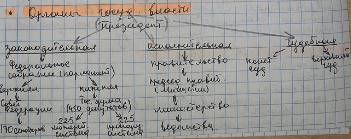

Зачет по праву
Конституция
- основополагающий учредительный политико-правовой акт, закрепляющий политической силой права и свободы человека и гражданина, определяющий форму правления и государственного устройство, учредительному органу государственной власти. Имеет высшую юридическую силу.Конституционное право
- отрасль права, представляющая собой совокупность юридических норм определяющих форму правления и государственной-территориальное устройство, формулировки и взаимоотношения высших органов государственной власти, права и обязанности граждан.Принципы политического права:
- Республиканская форма правления;
- Признание народа источником власти;
- Приориет и нерушимость прав и свобод человека и гражданина;
- Разделение властей;
- Федерализм.
Источники политического права:
- Конституция РФ 1993г.;
- Федеральный конституционный закон "О референдуме", "О конституционном суде", "О судебной системе и другое";
- Федеральные законы "О выборах Президента РФ", "О выборах дупутатов государственной ДУМы РФ", "Об основных политических избирательных прав граждан РФ", ""Об общих принципах организации местного самоуправления в Российской Федерации".
Конституционализм
- политическая система, опирающаяся на конституцию и конституционные методы управления;политико-правовая теория обосновывающая необходимость установления конституционного строя, а также учение о конституции как об основном документе политической валсти.
Конституция в России:
- 1906 - Основыне законы Российской Империи.
- 1918 - Первая Конституция РСФСР.
- 1924 - Первая Конституция СССР.
- 1936 - Конституция СССР "Победа социализма".
- 1977 - Конституция СССР "Конституция развитого социализма".
- 1993 - Конституция РФ.
Элементы конституционного строя РФ:
- Россия - демократическое государство;
- Правовое государство;
- Государство с республиканской формой правления;
- Суверенное государство;
- Светское государство;
- Экономическая основа - частная, государственная, муниципальная и другие формы собственности;
- Высшая ценность - человек, его права и свободы.
Суверенитет
- верховенство власти, полная независимость государства в его внутренних делах и в ведении внешней политикиОрганы государственной власти

Гражданство
- устойчивая правовая связь лица с государством, выражающаяся в совокупности их взаимных прав и обязанностей.Вопросы гражданство регламентируются нормами
- Конституция РФ
- Федеральный закон "О гражданстве РФ"
- Междунардного права
Вопросы гражданство регламентируются нормами
- Конституция РФ
- Федеральный закон "О гражданстве РФ"
- Междунардного права
Гражданство РФ соновано на принципах:
- Право каждого человека в РФ на гражданство
- Принципы единого и равного гражданства
- Недопостимости выдачи российского гражданина другому госудраству
- Сохранение гражданства за лицами, проживающеми за пределами РФ, также при заключении и распространии брака
- Признаки двойного гражданства.
Основание приобретиния гражданства:
- По рождению (принцип крови и почвы);
- При вступлении в брак;
- Прием в гражданство;
- Восстановление гражданства;
- Изменение терретории гражданина государства.
Прекращение гражданства:
- Добровольный выход из гражданства;
- При вступлении в брак;
- Лишение гражданства по решению государственных органов;
- Изменение терретории гражданина государства.
Субъектов РФ. Всего 85:
- 22 республики;
- 9 краев;
- 46 областей;
- 3 города федерального значения (Москва, СПБ, Севастополь);
- 1 автономная область;
- 4 АО;